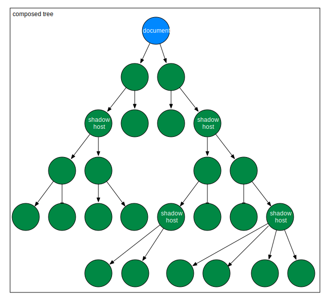

Web Components and Polymer
The future of the web ?

SCOOP Vortrag Jan. 2016 / M. Schmitt
Schon wieder ein JS Web Framework?
Wir hatten bereits:
- jQuery
- GWT
- Dart
aktuell beliebt:
- Angular 1/2
- React
- Web Components ?
Anforderungen an ein Web Framework
- früher: Server hat vollständige Seiten gerendert.
- jetzt: Single Page Application.
- Immer mehr Features sind clientseitig zu lösen.
- server liefert nur noch Daten und Sicherheitsfeatures
- neue Features: offline, locale Storage, Mobile, service-worker, progressive WebApp
Wie sollte das Framework aufgebaut sein?
- möglichst nah an Browser engine.
- Html aus Html files. (nicht jsf,jsx,...)
- css aus css files. (oder sass, less,..)
- js möglichst schlank und einfach. (evtl. ES2015 und Transpiler)
- möglichst wenig Framework.
Worum gehts diesmal?
- Erstellung neuer Html Elemente: <x-foo>Hi.</x-foo>
- Spezifikation: http://webcomponents.org/
- Implementierung: Im Browser bzw. Polyfill
- Vereinfachung mit Polymer: https://www.polymer-project.org/1.0/
Erfahrungen
- Polymer Konferenz in Amsterdam
- Polymer in privaten Projekten
Theorie
http://webcomponents.orgThe goal of web components is to reduce complexity by isolating a related group of HTML, CSS, and JavaScript to perform a common function within the context of a single page.
HTML, Document, DOM
- Browser erzeugt aus HTML Elementen document mt DOM Tree
- HTML Elements sind in Spec vorgegeben: a, input,...

Web Components
Web Components ermöglichen die Erzeugung neuer Elemente.
| Custom Elements | |
| HTML Imports | |
| Templates | |
| Shadow Dom |
Custom Elements
This specification describes the method for enabling the author to define and use new types of DOM elements in a document.
- neue Elemente müssen ein "-" enthalten!
- document erhält eine registry, in der neue Elemente registriert werden können.
- Element Registrierung kann auch nach der Verwendung erfolgen!
Custom Elements
Extends HTML Elements
//create element x-foo
document.registerElement('x-foo', {
prototype: Object.create(HTMLParagraphElement.prototype, {
firstMember: {
get: function() { return "foo"; },
enumerable: true,
configurable: true
},
}),
extends: 'p'
});
//use element x-foo extends HTML Element p
Paragraph
Attribute aus HTML Element sind gültig. (disabled,..)
Custom Elements
create new Elements
//create element x-foo
document.registerElement('x-foo', {
prototype: Object.create(HTMLParagraphElement.prototype, {
})
});
//use element x-foo
Custom Elements
| Callback name | Called when |
|---|---|
| createdCallback | an instance of the element is created |
| attachedCallback | an instance was inserted into the document |
| detachedCallback | an instance was removed from the document |
| attributeChangedCallback(attrName, oldVal, newVal) | an attribute was added, removed, or updated |
 HTML Imports
HTML Imports
HTML Imports are a way to include and reuse HTML documents in other HTML documents.
// import element from external html file
//use element x-foo
lädt externes HTML mit css, script und anderen links
Mozilla will Html Import nicht umsetzen!
Templates
This specification describes a method for declaring inert DOM subtrees in HTML and manipulating them to instantiate document fragments with identical contents.
- <template> ist ein html element.
- <template> erzeugt ein Dokument Fragment.
Templates
Name Colour
 Shadow DOM
Shadow DOM
This specification describes a method of combining multiple DOM trees into one hierarchy and how these trees interact with each other within a document, thus enabling better composition of the DOM.
 Shadow DOM
Shadow DOM

 Shadow DOM
Shadow DOM
- Any element can host one associated node tree, called a shadow tree.
- css ist nur innerhalb shadow tree gültig.
- html id ist nur nnerhalb shadow tree gültig.
- javascript ist nur nnerhalb shadow tree gültig.
 Shadow DOM
Shadow DOM
composed tree
 Shadow DOM
Shadow DOM
Slots and distributions
- Children aus den Document werden in slots des shadow trees übernommen.
text
 Shadow DOM - Slots
Shadow DOM - Slots

Web Components - Example
I'm in Shadow DOM. My markup was stamped from a <template>.
Web Components - Example

Browser Unterstützung

Polyfill
Polyfill ermöglicht den Einsatz in "allen" Browsern.

Polyfill
webcomponents-lite.js
für Custom-elements aund html-import
<script src="webcomponentsjs/webcomponents-lite.js"/>
webcomponents.js für alle 4 Specs
plus ES6 Weak-Maps und Mutation Observer
<script src="webcomponentsjs/webcomponents.js"/>
Web Components Libraries
Die folgenden Libraries und Frameworks verwenden die Web Components Specs:
- x-tag (ex-Mozilla, nun Microsoft)
- bosonic (minimalistic)
- Polymer (Google)
Interoperabilität
Web Components können aus "beliebigen" Libraries miteinander gemischt werden.
Sie können auch in SPA Frameworks (wie Angular, React) integriert werden.
Showcases
gesammelte Web Components findet man unter:
- https://customelements.io/
- https://elements.polymer-project.org/
Praxis
http://polymer-project.org
Polymer
- vereinfacht das Erstellen von Web Components
- kann auch vollständige SPA erstellen.
Beispiel
Polymer Features
- data binding
- custom styling